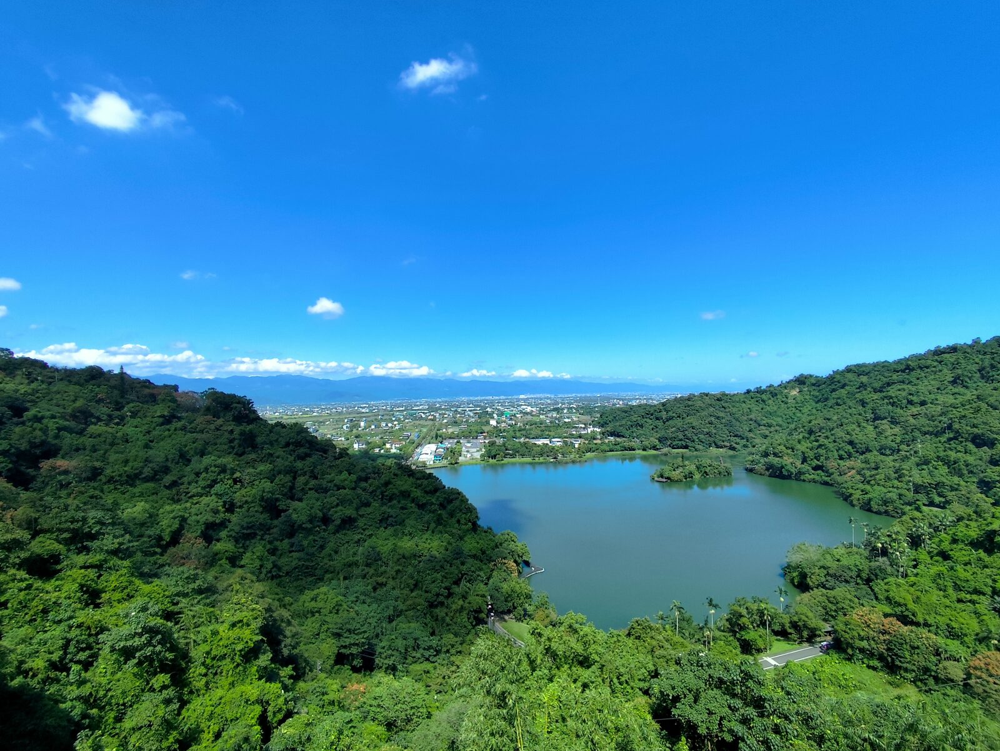
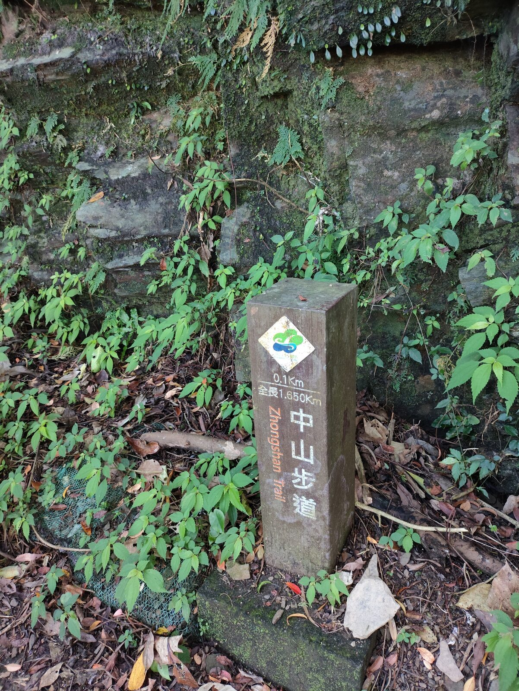
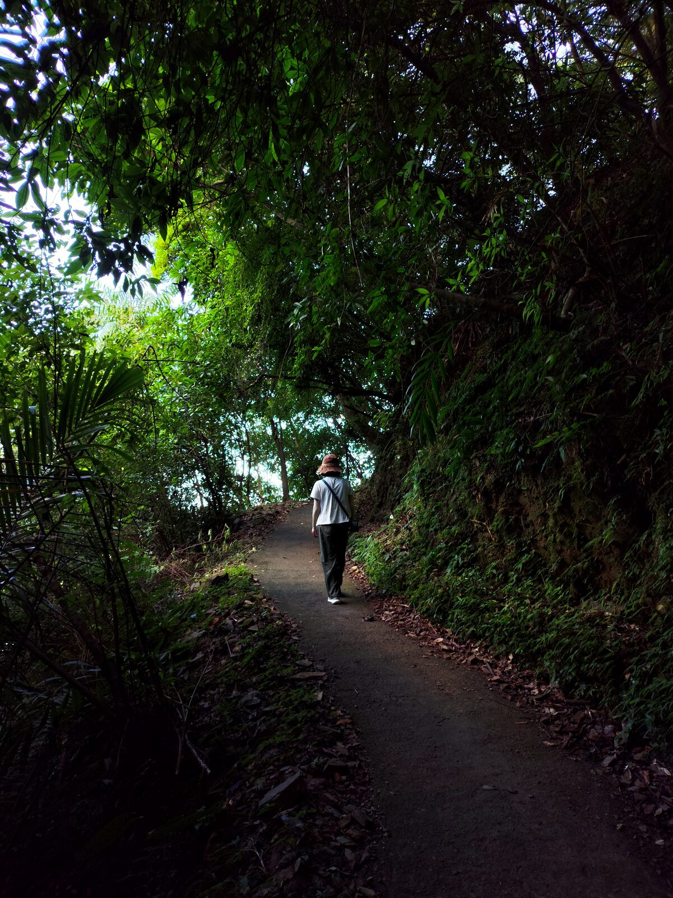
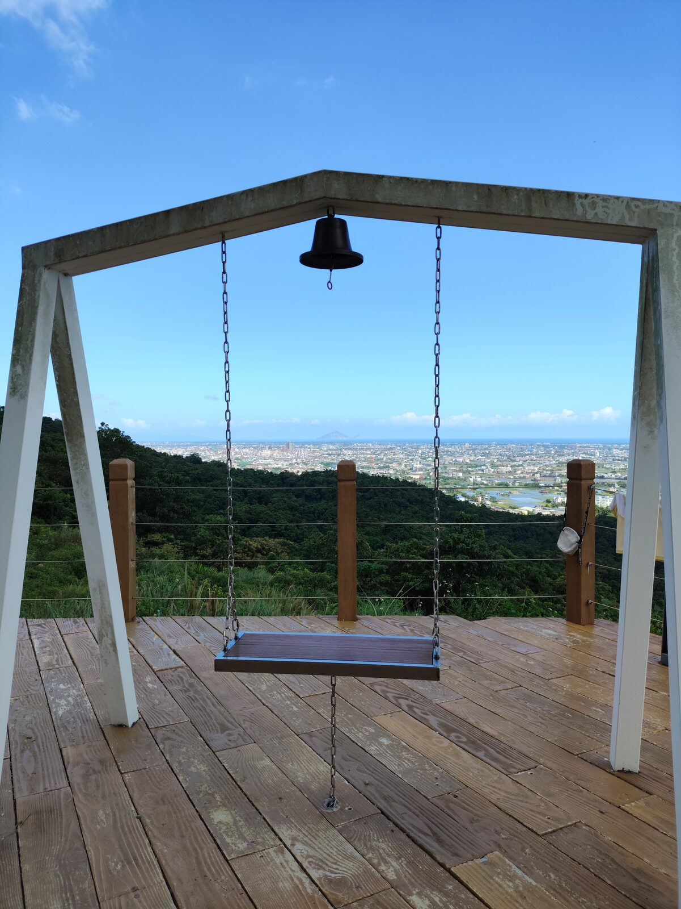
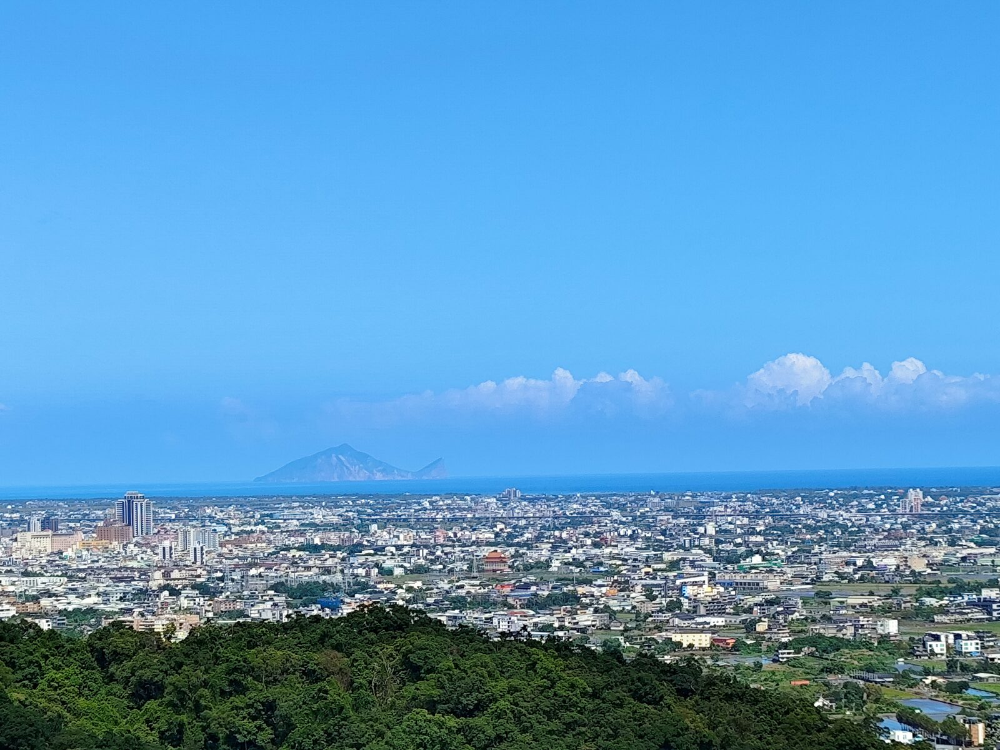
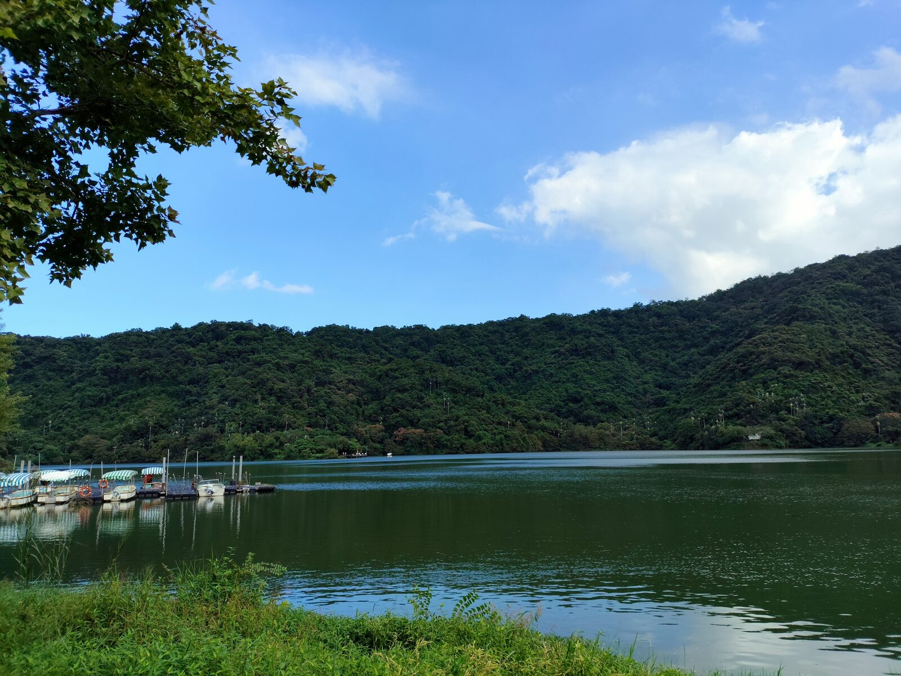
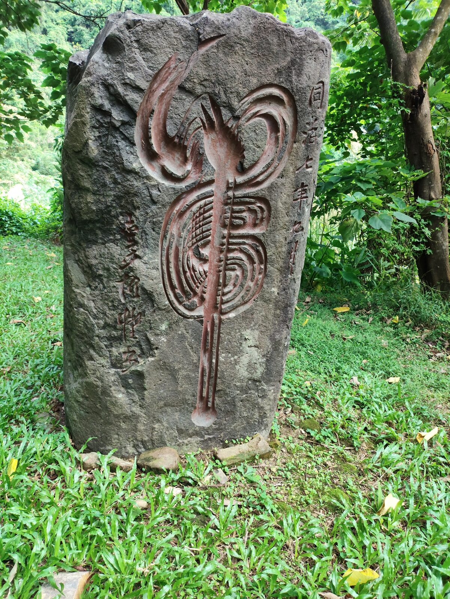
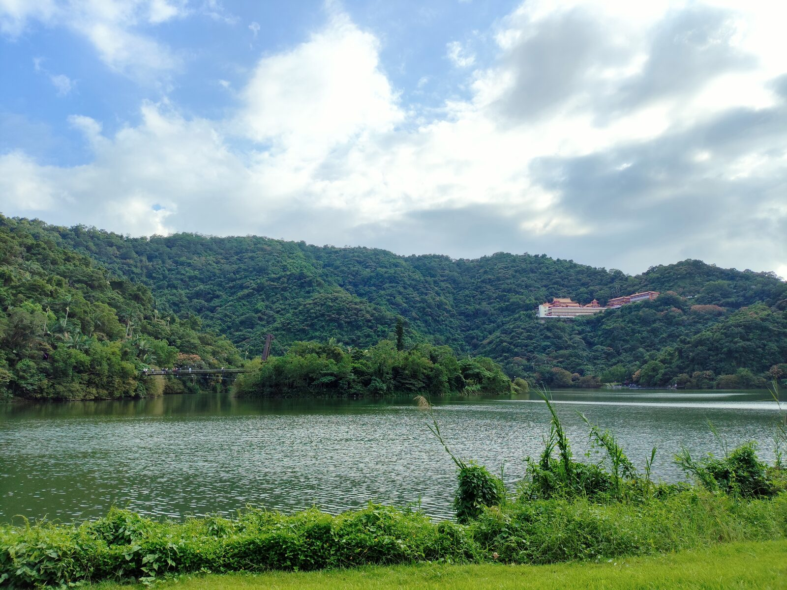

從高處望下去，梅花湖像一枚嵌在綠山裡的鏡子，湖心有小島，遠方是平原與連綿山影。這一帶的節奏不急：先上半山腰的三清宮，再走中山步道，最後把湖繞一圈。
虔誠的香客與宮廟團體，在位於梅花湖上半山腰的三清宮參拜。香火與人聲在廟宇裡交錯，走出廟門，山風立刻涼了下來。


廟旁接上中山步道。木樁標著全長約 1.65 公里，路不長，卻被林蔭蓋得嚴嚴實實。兩旁岩壁與蕨類貼得很近，走起來像鑽進一條綠隧道，腳步自然慢了下來。

走到中山亭，視野忽然開闊。坐在涼亭平台上的鞦韆，遠眺龜山島——微風吹在臉上，遊客不多，有人坐著，有人躺著，在這處像世外桃源的高台，把一整片平原與海線都收進眼裡。

藍天底下，龜山島的輪廓清晰可辨。城市、田野、海平線一層層推遠，風把聲音都吹淡了。在這裡待一會兒，比趕著打卡更值得。

下山後走環湖步道，沿著梅花湖走一圈。湖上棧道有遊客餵魚，水面平靜，對岸山色濃綠。走到一處草皮，湖中小島、吊橋，以及遠方山腰上的三清宮，都一一入鏡。


草地上立著一塊同治七年的虎字碑。再往前，湖面把吊橋、小島與山腰宮廟一起收進去——天、地、人，在這一幅圖裡，各自安靜地在場。
PLACE NOTE / 三清宮・梅花湖
梅花湖位於宜蘭冬山，湖周有環湖步道與遊艇碼頭；三清宮在湖區上半山腰，廟旁可接中山步道通往中山亭展望點，天氣晴朗時可遠眺龜山島。步道路線與開放狀況請以現場公告為準。
文章與照片為本次旅行的個人記錄。